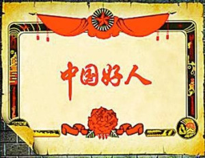

今天坐车回家，买完票后在候车厅等着，坐我对面是一对情侣，正在秀恩爱…
让我这个单身的少年情何以堪，然后我就闭目养神了！结果他们两人还秀恩爱秀的声音越来越大了，本来候车室嘈杂的环境也就无所谓了！越看越不顺眼，忽然我看到那女的穿的外衣是校服（女生都爱把衣服袖子穿好，穿在前面，就是反串，我也解释不好…）感情是学生，哎！学生就应该好好学习，处什么对象，真是的，于是我决定帮助他们…………
想了一会………
我拿出手机装着打电话：“喂喂喂，妈的，电话怎么还不好使了，艹，怎么没有声音呢？”声音故意弄的很大，引起目标的注意…
过了一会，我对少年说：兄弟，能把电话借我用下吗？我给你钱，打电话要出去好远的。少年：“给你打吧！”在他的注视下，我拨通了我自己的手机号，然后记录了他的手机号：1584607xxxx，又过了一会！
我说：兄弟，我手机不好使，给我朋友打不通，能使你手机上下qq吗？我给他发个消息。少年迟疑了一下但是看到女友正看着他，他就说：没事，用吧！
我果断打开通讯录，快速的浏览，同时用我手机记录…他妈妈：1366457xxxx.
爸爸：137960xxxxx
他媳妇：187xxxxxxxxx
然后快速登陆他qq，记下他qq号码：6075xxxxx
一切快速弄完后，把手机还给了少年，并说：谢谢兄弟，你可帮了我大忙，来，这盒烟收下（本来想给我朋友的，我不抽烟的，我也猜到他不会要，因为对象在旁边）少年；“不用了！我不抽烟，不用谢我，……”说了一些客套话，渐渐有些熟悉了！
我：“兄弟，我还会算卦呢！我给你算算啊！”少年：“好啊！”
（这是我以前对这个东西感兴趣，有些研究，）
以下就不说了，都是无关紧要的对话~来说说收获吧！
男：姓名：张旭
出生日期：1996.12.15 出生时辰：早8:30分
姓名；李舒雅
出生日期：1997.10.26.时辰；晚22:00
（哈哈，把时辰都弄出来了，周易强大）…后来我就走了，因为发车了……一路不提…………
到家了，我陪我妈妈聊会天，我就打开电脑完成我未完成的事情…
首先：我查了下他们学校（我是在校服上看到的学校名称）很快地址出来了：黑龙江省xxxx中学，地址：黑龙江省xxxxxx
联系电话：0451-575xxxxx
保存好信息，我果断的查他qq，很快我查出来他是三年五班的学生！（当然利用他手机，qq，等方式差出来的，这里我还顺便弄了他的地址…………
我：“你好，请问你是张旭的家长吗？”
对方：“是，请问你是？”
我：“我是他们学校的老师，他这个身份信息我需要核实下和户口本上的是不是一样的，以便确认报考的准确………”
很快：他的身份证号码，xxxxxxxxx…2653.住址：xxxxxxxx等消息）
嘿嘿，这就够了……
拿起电话设置好一个手机号，打通他们学校的电话，
我：“您好，请问是xxxxxx中学吗？”
对方：“是的，您有什么事？”
我：“我是赵欢的家长，我想问下三年五班的班认手机号是多少，我找他有事，麻烦您了！”
对方：“哦！您等一下”
过了一会他说：“三年五班的班认手机号：131xxxxxxxxx.他叫王峰”
我：“谢谢”
然后我就挂断了。
（总结：我谎称是某家长，因为对方不可能记住每一个学生的，他也不会去记，而且还增加看信任度，他还很乐意帮你）
然后我就给他们班认打电话，我：喂，你好，请问你是王老师吗？
王峰：“我是，你那位？”
我：“我是张旭的哥哥，我想问问他最近学习怎么样，表现怎么样，”
王峰：“这孩子……………”（一片长篇大论，我应付着，随后就挂了，我的主要目的就是知道下他们班认是男女，还有一些表现情况，）
我休息了一下，拿起手机，设置成他们班认的手机号给他妈妈打去，
我：“喂，你好，请问你是张旭的家长吗？”
对方：“是的，我是请问你是？”
我；“我是张旭的班认，我想跟你说说你家孩子在学校的表现。”
对方：“王老师啊，我家孩子没有给您闯什么祸吧！”
我：“没有，我…（我把刚才王峰说的一些东西，挑了点重点说了说）”
对方：“我家孩子不听话，让您费心了，没事您尽管收拾…”（怎么跟我妈一样呢？我记得我上初中的时候就这个和老师说…）
我：“那都没事，你家孩子在学校处对象了，你们知道吗？这孩子现在这成绩不错……”
对方：“王老师，等他回家，我和他谈谈，
我：“嗯，好好谈谈吧！现在很关键的时候，不能让他放松…”
后来我就挂了………
结果可想而知了………
后记：我用同样的方式告诉女生的家长，哈哈，我是不是一个好人呢？
我想对少年说：你现在应该努力学习，才能给他幸福，一个男人，必须要努力…
我想对女孩说：没有风雨的爱情，不是爱情，虽然你们家里会阻拦，但真爱是无价的，也能考验你们的爱情，同时还能看出男孩爱不爱你，不用谢我，请叫我红领巾……
结束了…你可以当做一个故事来读，你现在感觉我是不是一个好人呢？哎！没有办法，做好事从来都是不留名字的，请叫我红领巾……我都为我做的感动了……
